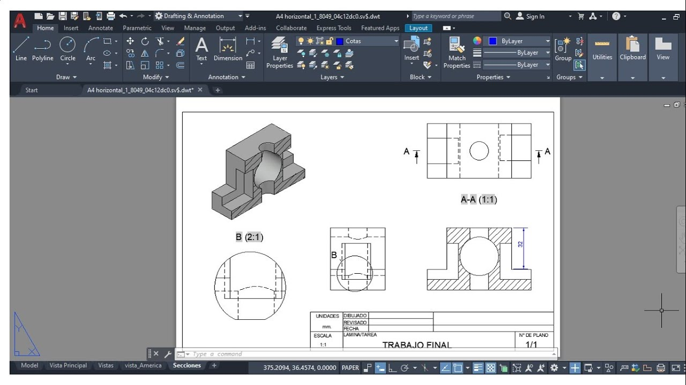
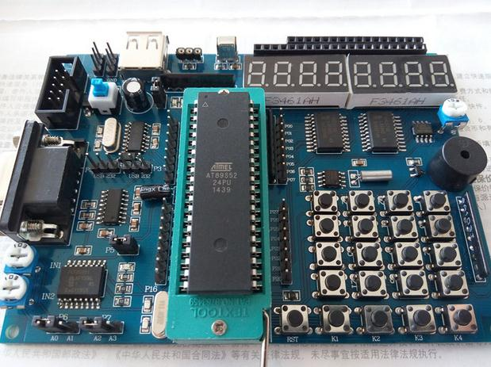
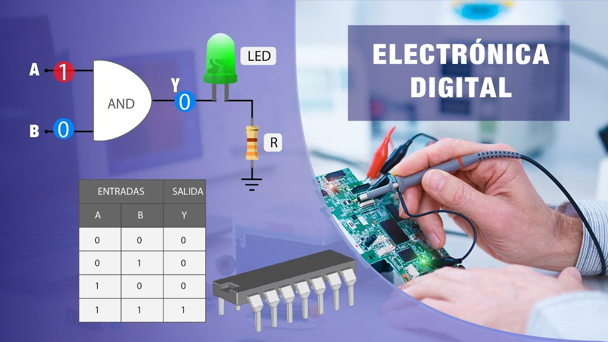

| Apellido: | Cano | |
| Nombres: | Jorge Eduardo | |
| Nacionalidad: | Argentino | |
| Fecha Nac.: | 16/11/1972 | |
| D.N.I.: | 12.345.678 | |
| Domicilio: | San Martín 123 | |
| Ciudad: | Gualeguaychú | |
| Provincia: | Entre Ríos |
| Secundario: | 1991. Técnico Agrónomo. Instituto Agrotécinco Gualeguaychú. |
| Superior: | 2013. Profesor de Educacion Tecnológica. |
| 2022. Instructor de Formación Profesional. | |
| Operador de PC: | Manejo de Planilla de Cálculos. |
| Manejo de Procesadores de Texto. | |
| Diseño Gráfico. Corel Draw | |
| Diseño en AutoCAD. Diseño en 2D y 3D. | |
| Animación 3D. 3DStudio MAX. | |
|  | |
| Manejo de Internet. | |
| Electrónica Digital: | Curso básico de electrónica digital en Facultad de Concepción del Uruguay Regional Gualeguaychú. |
| Curso de programación de microcontroladores Pic16F84 en Facultad de Con-cepción del Uruguay Regional Gualeguaychú | |
| Curso avanzado de programación de microcontroladores serie PIC16F87x en Facultad de Concepción del Uruguay Regional Gualeguaychú. | |
|  |
| Docente: | Profesor de Educación Tecnolóogica en Nivel Secundario. |
| Taller de Electrónica Digital en Tecnicatura Superior. | |
| Desarrollador: | Diseño de Sistemas Digitales. |
| Programador de Microcontroladores. | |
| Desarrollo de software para aplicaciones electrónicas. | |
|  |
| 1994 | Instructor de computación en instituto privado: “Academia de Enseñanza Integral”. |
| 1995 | Dibujo de planos de mensuras. |
| 1996 | Programación de sistemas Autocad. |
| 1997 | Cadista en Departamento de Ingeniería de Empresa de Manufactura Industrial. |
| 2002 | Emprendimiento. Desarrollador de Sistenas Digitales. |
| 2003 | Emprendimiento. Desarrollo de Software para Electrónica Digital. |
| 2014 | Docente de nivel Secundario y Superior. |